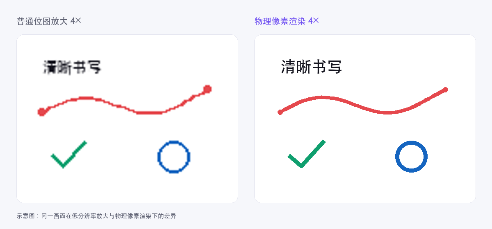

悬浮即用
右上角一个圆角按钮，始终保持置顶。点击进入标注，不占桌面、不打断课堂节奏。
核心能力
不打断正在讲的内容。一个按钮、一层冻结画面、几组顺手的快捷键，够用且不添乱。
右上角一个圆角按钮，始终保持置顶。点击进入标注，不占桌面、不打断课堂节奏。
截屏、画布、笔迹、保存全程按物理像素处理。Retina 与 200% 缩放下，边缘和细线不发虚。
增量绘制与二次贝塞尔平滑，只重绘变化区域。长时间板书也跟手，不堆图元、不卡顿。
在原始截图上重绘笔迹，而不是重新抓屏。保存对话框、弹窗和其他窗口都不会被拍进图片。
默认标注按钮所在的屏幕。Windows 上可用 --all-monitors 覆盖整个虚拟桌面。
不联网、不上传、不写注册表。截图只保存在你选择的位置，关闭窗口即退出。

示意图：同一画面在低分辨率放大与物理像素渲染下的差异
清晰度
Qt 直接读取屏幕的 devicePixelRatio。背景图与笔迹层都按物理像素存储，1 个逻辑像素在 Retina 上对应 2×2 个物理像素，边缘不需要插值。
2× 屏幕上，1 个逻辑像素由 4 个物理像素呈现。
200% / 300% 缩放同理。
使用流程
不切换应用，不打开工具栏。所有操作都在标注模式里完成。
按钮自动隐藏，当前画面冻结为一张底图。0.15 秒后再截屏，不会拍到按钮残影。
鼠标左键自由书写。R / G / B 换颜色，1–9 换线宽，C 清空，Ctrl+Z 撤销。
S 或 Ctrl+S 保存为 PNG / JPEG。Esc 退出标注，悬浮按钮回到原来的位置。
下载
Windows 与 macOS 分开打包，也可以下载双平台合集。所有发布文件都提供 SHA-256 校验值。
Windows 10 / 11 · x64
Apple Silicon · arm64
ScreenWhiteboard-v2.0.1-Windows-macOS.zip · 内含 Windows版/ 与 macOS版/，附使用说明与许可证 · 约 96 MB
FAQ
第一次运行前，先看看这几条。
打开「系统设置 → 隐私与安全性 → 屏幕录制」，勾选 ScreenWhiteboard。授权后需要完全退出 App 再重新打开，权限才会生效。
发布包没有做商业代码签名。点击「更多信息」→「仍要运行」即可。介意的话，可以从源码运行或自行打包。
目录版启动更快，不需要每次运行都把 Qt 运行时解压到临时目录。请保留整个 ScreenWhiteboard 文件夹，双击里面的 ScreenWhiteboard.exe。
发布版是 Apple Silicon（arm64）构建。Intel Mac 可以从源码运行，或执行 build/build_macos.sh 自行打包。
不会。程序不联网、没有遥测，截图只写入你选择的本地路径。源码在 GitHub 上可以完整核对。